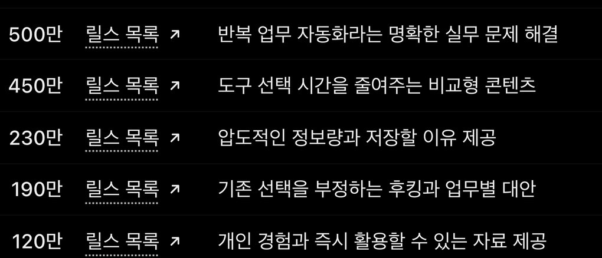

EP.29 · 계정 운영
인스타 계정 통째로
인스타 계정 통째로
AI한테 맡겼어요
터진 릴스를 읽고, 왜 터졌는지 찾고, 대본 · 목소리 · 영상 · 업로드까지 AI가 해요. 사람은 주제를 고르고 올리기 전에 승인해요.
01먼저 알아 둘 것
- 계정 제한 위험: 인스타 이용 약관은 허가 없이 자동화된 방식으로 정보에 접근하거나 수집하는 걸 금지해요(로그인 상태여도 마찬가지예요). 자동화 도구로 릴스를 긁거나 올리면 계정이 제한될 수 있어요. 자동 게시의 공식 경로는 Instagram API(프로페셔널 계정 + 권한)예요.
- 사람이 승인해요. 아래 사례(EP.25)도 계정 주인이 승인한 뒤에 올렸어요. 결제 · 계정 설정 · 댓글도 사람 몫으로 두세요.
- 인스타 아이디와 비밀번호를 외부 앱이나 AI에 넘기지 마세요.
- '왜 터졌는지'는 AI의 추측이에요. 조회수는 내가 직접 본 값을 쓰는 게 정확해요.
02이 계정에서 실제로 한 범위
- 읽기 · 왜 터졌나: 비슷한 계정 릴스를 조회수 구간별로 나눠 분석했어요. 10월 118편, 11월 조사까지 합치면 수백 편이에요. 로그인된 브라우저에서 읽었어요.
- 대본: Claude가 쓰고, 다른 Claude 세션과 ChatGPT가 검수했어요.
- 목소리: ElevenLabs 웹에서 생성했어요.
- 영상: 코드로 만든 렌더러가 화면을 그렸어요.
- 업로드: EP.25는 계정 주인이 승인한 뒤, 브라우저 자동화로 올렸어요. 공식 API 경로가 아니라서 위 위험을 함께 봐야 해요.
- 사람: 주제 후보를 읽어 보고 고르기 · 게시 승인.
영상 첫 화면의 조회수 1.6만은 2026-11-06 릴스 탭에서 읽은 값이고, 이 계정 릴스 중 가장 높아요.
03시작 요청문
영상의 한 줄
내 분야 터진 릴스 스무 개, 왜 터졌는지 표로 정리해 줘.
이것만 넣으면 AI가 분야를 묻거나 짐작해요. 아래처럼 분야를 적는 게 좋아요.
분야를 적은 버전
내 분야는 [분야 이름]이야. 터진 인스타 릴스 스무 개, 왜 터졌는지 표로 정리해 줘. 칸은 계정 · 첫 문장 · 조회수 · 링크 · 왜 터졌나. 조회수와 링크는 확인한 것만 적고, 못 찾은 칸은 "확인 못 함"이라고 적어 줘. 왜 터졌나는 추측이라고 표시해 줘.
내가 본 값으로 주제 다섯 개 받기
아래는 내가 릴스 탭에서 직접 본 표야. - 조회수 [숫자] / [릴스 제목 또는 첫 문장] - 조회수 [숫자] / [릴스 제목 또는 첫 문장] - 조회수 [숫자] / [릴스 제목 또는 첫 문장] 이 표에 있는 값만 근거로, 왜 차이가 났을지 추측 3개를 적어 줘. 그다음 이번 주 올릴 주제 다섯 개를 제목 한 줄씩 제안해 줘. 고르는 건 내가 할게.
정확한 숫자가 필요하면 이 방법이에요. 릴스 탭에서 직접 보고 적은 값만 쓰니까요.
04브라우저 연결 없이 돌려 본 결과
2026-11-06, ChatGPT 임시 채팅과 Claude 시크릿 채팅에서 돌렸어요. 브라우저나 외부 연결 도구는 쓰지 않았어요.
- ChatGPT · 한 줄 그대로: 분야를 묻지 않고 뷰티 분야로 짐작해서 표 20줄을 줬어요. 내 분야가 아닐 수 있어요.
- ChatGPT · 분야를 적었을 때: 표 20줄이 나왔어요. 조회수는 외부 사이트에 표시된 값이고, 개별 릴스 링크는 없고 목록 페이지 링크만 있었어요. '확인 못 함'이라고 적게 하면 링크 칸이 전부 '확인 못 함'으로 나왔어요.
- Claude · 한 줄 그대로: 분야부터 물었어요.
- Claude · 분야를 적었을 때: 웹 검색으로 20개 중 7개만 찾았고, 링크는 대부분 비었어요. 직접 고른 링크를 붙여 달라고 되물었어요.
- 내가 본 값을 넣었을 때(ChatGPT): 넣은 값만 근거로 추측 3개와 주제 다섯 개가 나왔어요. 원인을 단정할 수 없다는 말도 같이 나왔어요.

그래서 이 한 줄은 방향을 잡는 첫 표로 쓰세요. 숫자가 중요한 표는 03번 세 번째 요청문처럼 내가 본 값을 넣어요.
05출처
- Instagram 이용 약관(help.instagram.com/581066165581870) — 자동화된 정보 접근 · 수집 금지. 2026-11-06 확인.
- Instagram 도움말 "데이터 스크래핑으로 계정이 제한된 이유"(help.instagram.com/740480200552298) — 계정 제한. 2026-11-06 확인.
- Meta 개발자 문서 "Automated Data Collection" · "Instagram Platform: Content Publishing"(developers.facebook.com) — 공식 API 경로 · 게시 조건. 2026-11-06 확인.
- 썸네일 그림은 AI로 만들었어요.
실무에서 바로 쓰는 AI 활용법, 하나씩 올려요.
대행사에서 AI 교육하는 현직 마케터가 정리해요.
인스타에서 팔로우